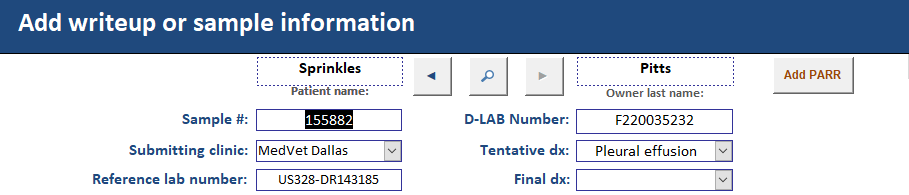
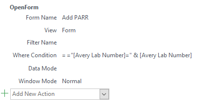
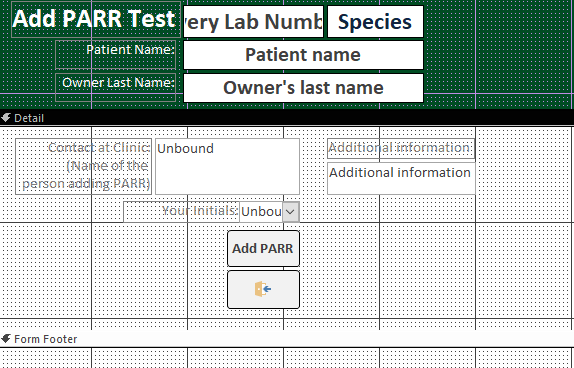
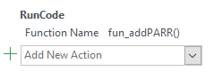

Introduction
Microsoft offers built in VBA methods to crete instances of other office Applications. Using these methods, it is possible to communicate between a MS Access front end database and another MS Office application (e.g. Outlook, Word, Excel).
The "Add PARR" button in the writeup form uses these built in methods to pass information from MS Access to the MS Outlook task list.
Prerequisites
To use the Add PARR button, some initial configuration in MS Outlook is required:
- cvmbs-mip_clinical_hematopathology@Mail.colostate.edu is added as an account to MS Outlook.
- For information on setting up the CH lab email on your computer, please see CH lab email setup
- The CH lab email must be set as the default email and the default Data File in MS Outlook's Account Settings for database functionality to properly work.
- The Add PARR button assumes a folder called "Tasks" exists in the default account. If the above settings are not correctly configured, the PARR task will either be added to your personal account, or Access will throw an error because the expected path does not exist.
Add PARR form
The Add PARR button uses an "On Click" event to open the Add PARR form by using the following macro:
The Add PARR form uses the [qrySamplePatients] query as the Record Source.
SELECT qrySamplePatients.* FROM qrySamplePatients;Inspecting the Property Sheet for the Add PARR form reveals the Filter condition set by the "Add PARR" button in the "Add Writeup" form.
[Avery Lab Number]=155882The form displays the information already in the database (the sample and patient information) in the header of the form. These fields have the "Locked" property set to "Yes" to prevent accidental data editing.
The [txt_clinicContact] and [txt_initials] are Unbound fields (they do not have a Control Source).
[txt_initials] uses a query to get the technician initials from the Personnel table:
SELECT Personnel.Initials, Personnel.[Last name], Personnel.[First name] FROM Personnel;There is also one hidden field: [txt_addInfo] which is later used to concatenate the generated PARR message with text previous text in this Additional info box.
The "Add PARR" button on this form uses a macro to run a VBA function:
Tasklist Module
All of the code used to add an item to the tasklist is contained in the "Tasklist" Module. These methods are described in detail below.
fun_addPARR()
This function is called by the "Add PARR" button inside the "Add PARR" form. A message is generated by fun_gatherInfo(). This message and a due date are passe to fun_addTaskList which adds the item to the CH Lab tasklist. The note is added to the Additional Info field in the Sample Submission table by fun_appendNote. The report date is set to 1/1/1901 by fun_setReportDate(). After PARR is added, the Add PARR form is closed and a message is displayed to the user informing them that PARR was added.
Function fun_addPARR()
'This function adds PARR to the tasklist
'Variables
Dim dueDate As Date
Dim subjectText As String
'Set values
dueDate = Date + 1
''subjectText = "test"
subjectText = fun_gatherInfo()
'Add to tasklist
Call fun_addTaskList(subjectText, dueDate)
'Add note to additional info as well as tasklist
Call fun_appendNote
'Change the report date to 1/1/1901
Call fun_setReportDate("1/1/1901")
'Alert user done
DoCmd.CLOSE acForm, "Add PARR", acSaveNo
MsgBox "PARR added to tasklist and database"
End Function
fun_addTaskList(subject As String, dueDate As Date)
This function generically adds something to the CH Lab tasklist. The subject (i.e. the message that will be displayed in the tasklist) and a due date are passed to this function.
Function fun_addTaskList(subject As String, dueDate As Date)
'This function generically adds something to a tasklist
'Variables
Dim olApp As Object
Dim myNamespace As Outlook.NameSpace
Dim myFolder As Outlook.Folder
Dim NewTask As Outlook.TaskItem
'Create Outlook Session
Set olApp = CreateObject("Outlook.Application")
Set myNamespace = olApp.GetNamespace("MAPI")
'Create tasklist item in CHlab "Tasks" folder
Set myFolder = myNamespace.Folders("cvmbs-mip_clinical_hematopathology@Mail.colostate.edu").Folders("Tasks")
Set NewTask = myFolder.Items.ADD(olTaskItem)
With NewTask
'Tasklist details
.Owner = "CVMBS-MIP Clinical Hematopathology"
.subject = subject
.dueDate = dueDate
'Add to CH tasklist
.save
End With
End Function
fun_setReportDate(reportDate As Date)
This function resets the report date back to 1/1/1901. To set the value on a different form, you must first select the form object, set the focus on that object to the field of interest, then you can change the value.
Function fun_setReportDate(reportDate As Date)
'This function sets the report date to the designated value
Dim writeupForm As Form
Set writeupForm = Forms("Add write up and fax date to case")
DoCmd.SelectObject acForm, "Add write up and fax date to case"
writeupForm.Date_report_faxed_to_vet.SetFocus
writeupForm.Date_report_faxed_to_vet.Value = reportDate
End Function
fun_gatherInfo() As String
This function gathers all of the sample and patient information necessary to create the tasklist message. These data are all gathered from the Add PARR form and concatenated together into a message. This function returns the message.
Function fun_gatherInfo() As String
'This function gathers the info necessary to add PARR to the tasklist
'Variables
Dim subjectText As String
Dim sampleNumber As String
Dim patientSpecies
Dim patientFirst
Dim PatientLast
Dim techInitials
Dim clinicContact
'Set form to gather info from
Dim frm As Form
Set frm = Forms("Add PARR")
'Gather info from ("Add PARR")
sampleNumber = frm.[txt_sampleNum]
patientSpecies = frm.[txt_species]
patientFirst = frm.[txt_patientName]
PatientLast = frm.[txt_patientLast]
clinicContact = frm.[txt_clinicContact]
techInitials = frm.[txt_initials]
'Concatenate all the information into a PARR message
subjectText = sampleNumber & ", " & _
"""" & patientFirst & """ " & PatientLast & ", " & _
"Add " & patientSpecies & " PARR per " & _
clinicContact & _
" -" & techInitials & " " & Date
'Export PARR subject message
fun_gatherInfo = subjectText
End Function
fun_appendNote()
This function adds the message generated by fun_gatherInfo() to the database. The message is concatenated with leading/trailing "**" such that the format is:
**Add [SPECIES] PARR per [CLINIC_CONTACT] -[INITIALS] [DATE]**
[ADDITIONAL_INFORMATION]
Similar to fun_setReportDate, to set the text, the Writeup form is selected, the focus is set on the Additional info box, then the Text is replaced with the pre-concatened string.
Function fun_appendNote()
'This function appends the add PARR note to the Additional Info box in the database
'Variables
Dim additonalInfo
Dim subjectText
Dim finalString
'Set values
subjectText = fun_gatherInfo()
'Set form to gather info from
Dim frm As Form
Set frm = Forms("Add PARR")
additionalInfo = frm.[txt_addInfo]
'Conatenate message and additional info
finalString = "**" & subjectText & "**" & vbNewLine & _
additionalInfo
'Replace Additional Info with concatenated message
Dim writeupForm As Form
Set writeupForm = Forms("Add write up and fax date to case")
DoCmd.SelectObject acForm, "Add write up and fax date to case"
writeupForm.Additional_information.SetFocus
writeupForm.Additional_information.Text = finalString
End Function